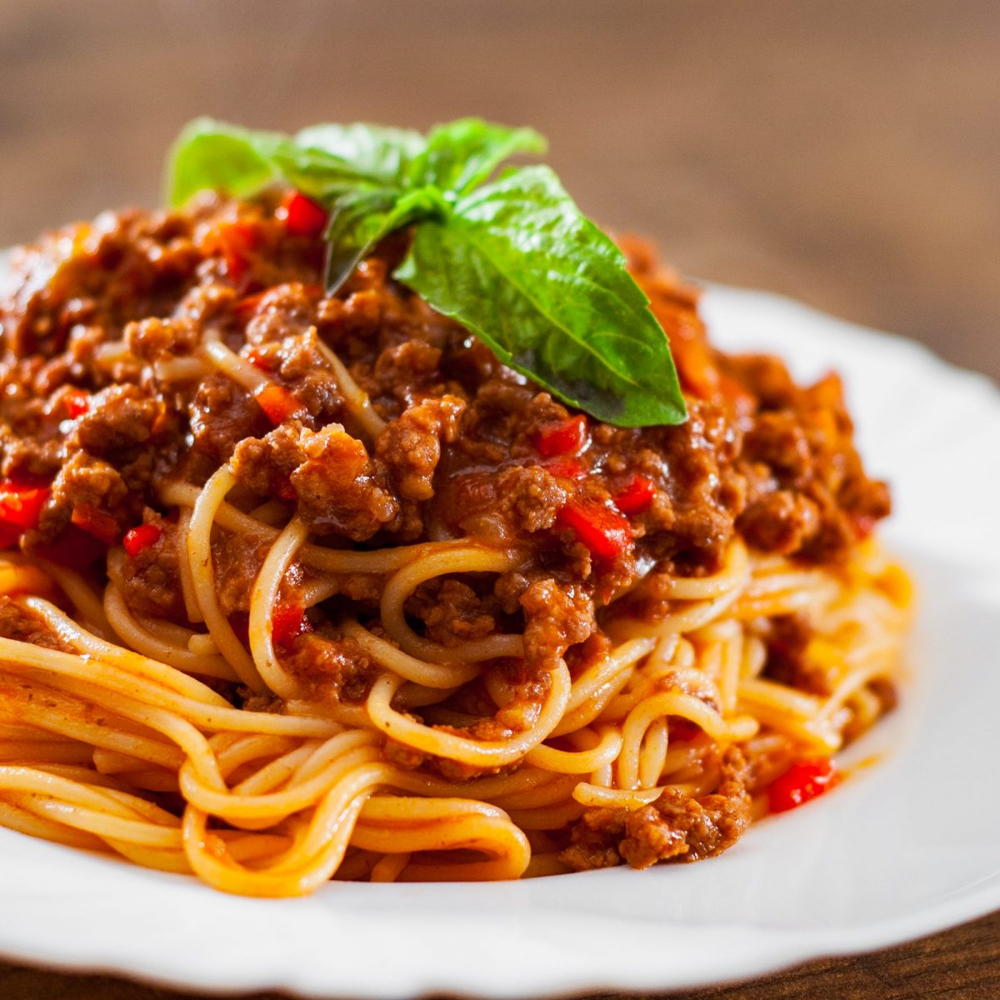

Minu lemmikroa retsept
Pasta Bolognese
| Koostisosad |
Kogus |
| Spagetid |
500g |
| Õli |
2tl |
| Suitsupeekon |
100g |
| Sibul |
1tk |
| Küüslauk |
2küünt |
| Veisehakkliha |
400g |
| Tomatipüree |
500g |
| Suhkur |
1tl |
| Lihapuljong |
2dl |
| Sool |
Tunde järgi |
| Must pipar |
Tunde järgi |
| Riivjuust |
50g |
Valmistamine
- Kuumuta kastrulis õli.
- Lisa hakitud peekon, sibul ja küüslauk ning kuumuta mõni minut.
- Lisa hakkliha ja jätka praadimist 5 minutit.
- Viimaks lisa tomatipüree ja puljong.
- Hauta vaiksel tulel kaane all 50 minutit, aeg-ajalt segades.
- Maitsesta suhkru, soola ja pipraga.
- Keeda spagetid soolaga maitsestatud vees pehmeks, kurna ning sega kastmesse.
- Serveeri mahlase kastmega ülevalatud pastat koos riivitud Parmesani juustuga.

Originaallink: https://toidutare.ohtuleht.ee/924767/pasta-bolognese
Arman Lib. © 2021